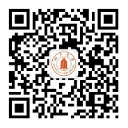

学院通知 · 科研创新
四川大学化学学院2024年接收推荐免试攻读硕士学位研究生和直接攻读博士学位研究生简章
发布时间：2023-09-20
四川大学化学学院办学历史悠久，是我国建立最早的化学院系之一。经过 110 余年的历史积淀，化学学院已经成为国家布局西部的重要化学人才培养和科学研究基地。 化学学院是国家首批研究生培养单位。 1986 年获得博士点， 1999 年获得化学博士授予权一级学科点， 2000 年获准设立博士后流动站。学院的博、硕士点涵盖了无机化学、分析化学、有机化学、物理化学、高分子化学与物理、绿色化学、化学生物学、放射化学等二级学科， 2020 年开始招收 材料与 化工专业学位，从基础到工程技术，形成了完整的学科体系。有机化学为国家重点学科，放射化学是国家自然科学基金委设立的 “放射化学特殊学科点”，高分子化学与物理是国家一级重点学科“材料科学与工程”重要建设方向之一。 2008 年学院获准“国家理科基础科学研究和教学人才培养基地”； 2009 年成为“国家拔尖人才培养”试点单位； 2009 年化学专业被评为“国家特色专业”； 2019 年化学专业入选首批国家级一流本科专业（双万计划）和首批“强基计划”； 2020 年入选首批“国家拔尖人才培养基地 2.0 ”；化学专业（ 2019 年）和应用化学专业（ 2022 年）均入选“国家一流本科专业建设点”，实现“国家一流本科专业建设点”全覆盖。四川大学化学学科 2017 和 2022 年连续两轮入选国家“双一流”建设学科， 2021 年入选国家“关键领域急需发展学科”。化学学科在第四轮全国学科评估中为 A- ，在教育部全国第五轮学科评估中跃上新台阶。 川大化学弦歌不辍，源于历经岁月洗礼却历久弥新的精神根脉。四川大学化学学科建立以来，著名学者任鸿隽、张洪沅、张铨、刘为涛、鄢国森等曾在此任教。今天的川大化学正努力建设一支师德高尚、学术卓越、教学一流的师资队伍。学院现有在职教职工 187 人，专任教师 1 23 人，其中正高 84 人，副高 34 人，博士生导师 89 人， 硕士生导师 1 16 人 。学院有中国科学院和中国工程院院士 2 人，国家杰青等国家级领军人才 12 人，国家教学名师奖获得者 1 人，国家四青人才 2 1 人，国字号人才占比达 28% ；形成了环境友好高分子材料“全国高校黄大年式教师团队”、“高选择性的有机合成新反应与新策略”国家自然科学基金委创新研究群体、“绿色化学”国家教学团队和 6 个省部级教学、科研团队。 川大化学聚焦科学前沿和国家需求，把解决重大科学问题、重大技术和工程问题作为使命和追求。获批立项了国家自然科学基金基础科学中心项目 “烃类化合物不对称催化转化”，这是四川大学首个国家基础科学中心，也是西南地区获批的第一个基础科学中心。学院现建有环保型高分子材料国家地方联合工程实验室、环境与火安全高分子材料省部共建协同创新中心、绿色化学与技术教育部重点实验室、环境友好高分子材料教育部工程研究中心、四川省环境保护环境催化材料工程技术中心、四川省机动车尾气净化工程技术研究中心、四川省环境友好高分子材料国际联合研究中心等国家级及省部级科研基地，牵头成立了四川大学 - 华为化学材料联合创新中心。学院建有 1 个国家双创示范基地、 2 个国家级创新引智基地（ 111 基地）（绿色化学与技术学科引智基地、环境与火安全创新引智基地）。近十年，学院科研经费不断增加，承担国家重大任务的能力显著增强， 202 2 年科研经费总量达到 1. 5 亿元。学院形成了包括手性分子科学、环境友好高分子材料、绿色有机合成化学、生物质转化化学、有机功能材料创制化学、环境友好的催化科学与技术、化学生物学、关键核素分离与核废物处理、超分子科学等特色研究方向，特别是在手性分子科学、无卤阻燃高分子材料等领域产生重要国际国内影响。 川大化学在教育教学改革、科学研究、工程技术和产业转化等领域取得重要成就。近十年来，学院获得国家级、省部级以及重要社会科技奖励 3 0 余项，包括未来科学大奖 - 物质科学奖、国家自然科学二等奖（ 2 项）、国家技术发明二等奖（ 1 项）、国家科技进步奖二等奖（ 1 项）、国家教学成果奖二等奖（ 1 项）、陈嘉庚科学奖 - 化学奖（ 1 项）、何梁何利科学与技术进步奖（ 2 项）、四川省科学技术杰出贡献奖（ 2 项）。多位教师获得国家级和省部级荣誉，包括国家杰出教学奖（新中国成立以来专门针对高等教育教学领域的最大重奖）、全国创新争先奖（ 2 项 ）、全国杰出专业技术人才（ 1 人）、全国三八红旗手（ 1 人）、中国青年女科学家奖（ 1 项）、四川省杰出人才奖（ 2 项）等。 化学学院具有优良的教学科研条件。由无机化学、分析化学、有机化学和物理化学 4 个基础课实验室、综合化学实验室以及创新实验室组成的基础实验教学中心，使用面积达 10500 平方米。学院还建有化学专业实验室、应用化学专业实验室和仪器中心。实验室均面向本科生开放，本科阶段即可开展科学研究，已经形成我院本科生培养的显著特色。全院拥有总价值超过 2 亿元的各类科学仪器和教学设备，为学生的系统实验训练和综合素质培养以及师生员工的教学与科研工作提供了充分的保障。近年来，学院在实践育人和双创育人方面成效显著，在科研创新大赛及活动中获国家级奖励 30 余项，包括“互联网 + ”大学生创新创业大赛国家级金奖 2 项和银奖 3 项；全国大学生化学实验创新设计竞赛连续两届获得特等奖；近两届全国大学生化学实验邀请赛获得 1 金和 5 银。 川大化学牢牢把握社会主义办学方向，始终把人才培养作为根本任务，坚持立德树人。明确了 “厚基础、个性化、主动性、创新型”的人才培养思路，确立了“具有深厚人文底蕴、扎实专业知识与化学智慧、强烈创新意识、宽广国际视野”的人才培养目标，塑造国家栋梁，培育社会精英。学院年招收本科生近 300 人、硕士生 220 人和博士生 1 4 0 人。涓滴海涵，寸草春晖，自新中国成立以来化学学院为国家培养输送各类化学人才 14964 名，培养和造就了一大批杰出学者和行业精英，如陈荣悌、肖伦、高士扬、陈芬儿、赵宇亮、蒙大桥等院士。 110 余载风雨历程，沉淀了川大化学的深厚底蕴，催化着莘莘学子的伟大梦想。我们将以更加饱满的激情、豪迈的步伐，把四川大学化学学院办成一所受人尊敬、令人向往、育人成才、卓有建树的一流学院！ 202 4 年接收推免生（含直博生）简章如下： 一、申请条件 1. 拥护中国共产党的领导，愿为社会主义现 代化建设服务，品德良好，身体健康，遵纪守法。 2. 应届本科毕业生且获得本人所在学校的推荐免试资格。 3. 顺利毕业并获得学士学位。 二、接收专业、人数 我院相关招生专业可接收硕士推荐免试研究生和直博生。具体招生专业、人数等详情请查阅《四川大学 202 4 年推荐免试研究生招生专业目录》（含直博生）。各学科招生人数为预计招生人数，实际招生人数会根据生源情况做适度调整。 三、申请、复试、录取程序 1. 预报名仅作为我院充分了解学生的途径之一，但为重要途径。即日起至 9 月 26
